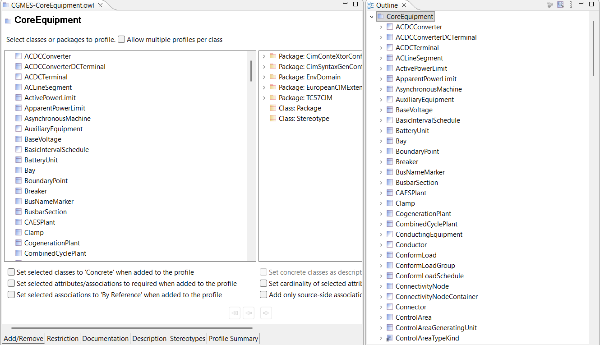

The Profile Editor
The Profile Editor is where you design a profile: the selection and restriction of CIM classes, attributes and associations from which CIMTool generates schemas. It opens when you double-click a profile (an .owl file in a project's Profiles folder) in the Project Explorer.

Interim screenshot, to be replaced: the Profile Editor on the Add/Remove tab, with the Outline view beside it and the six tabs along the bottom of the editor.
Working from the Outline View
The Profile Editor always works on the element selected in the Outline view: the profile itself, a class in the profile, or one of its attributes or associations. Select an element in the Outline first; the tabs then show what applies to it.
The Tabs
The editor has six tabs, shown along its bottom edge:
| Tab | Use it to |
|---|---|
| Add/Remove | Choose which classes, attributes and associations from the schema are in the profile. |
| Restriction | Restrict a class or property: cardinality, concrete classes, By Reference, the parent class, and the classes an association may refer to. |
| Documentation | Write full documentation for the selected element in AsciiDoc. |
| Description | See the schema's description of the selected element, add the profile's own description, and rename profile classes. |
| Stereotypes | Apply stereotypes to the selected element. |
| Profile Summary | Set the profile's namespace, choose which builders generate artifacts from it, and run Reorganize and Repair. |
Saving the profile (Ctrl+S) runs the builders selected on the Profile Summary tab and regenerates their artifacts. See Workbench Basics: Builds.
Profile Targets
A profile is almost always designed with a particular kind of schema in mind: the schema that will be generated from it to validate instance data. This is the profile's target. The target shapes how the profile is designed, and some Profile Editor options mean slightly different things depending on it.
CIMTool profiles have one of two main targets:
- XSD and JSON Schema. These schemas validate hierarchical instance data, such as XML or JSON messages and documents. The two are similar enough that the profiling approach is identical for both, so a single profile designed for this target can generate both an XSD schema and a JSON Schema.
- RDFS. These schemas validate graph-based instance data, such as CIM/XML. A profile designed for this target is used with the RDFS or OWL builders.
These two targets correspond to the conventions of IEC TC 57: the graph-based CIM/XML conventions of Working Group 13 (WG13) and the hierarchical message conventions of Working Group 14 (WG14).
A profile designed for one target is not used to generate schemas for the other. Generating an XSD or JSON Schema from an RDFS profile, or an RDFS schema from an XSD and JSON Schema profile, does not produce a correct schema, because each profile is designed around its own target's conventions.
How the Builders Reflect the Target
You choose which builders run for a profile on the Profile Summary tab, where each builder is listed by name. Most builder names state the target they are for, and the documentation and diagram builders come in matching sets for each target. A profile designed for XSD and JSON Schema uses the builders in the first column, and a profile designed for RDFS uses those in the second.
| Kind of builder | XSD and JSON Schema target | RDFS target |
|---|---|---|
| Schemas | xsd, xsd-part100-ed2, json-schema-draft-07, json-schema-draft-2020-12 | rdfs-2020, linkml (currently RDFS only), plus the legacy RDFS and OWL builders: legacy-rdfs, legacy-rdfs-augmented, simple-owl, simple-owl-augmented, simple-flat-owl, simple-flat-owl-augmented, and ttl (the profile written as Turtle). Also apache-avro-schema-beta, a beta Apache Avro schema builder. Avro is its own schema language, but it is a sibling of RDFS: an Avro profile is designed in the same way as an RDFS profile. |
| PlantUML diagrams | puml-xsd-t2b, puml-xsd-l2r, puml-json-t2b, puml-json-l2r | puml-rdfs-t2b, puml-rdfs-l2r |
| AsciiDoctor documentation | adoc-article-xsd, adoc-inline-xsd, adoc-article-json, adoc-inline-json | adoc-article-rdfs, adoc-inline-rdfs, adoc-article-rdfs-mappings, adoc-inline-rdfs-mappings |
| General documentation | Either target: html, profile-doc-rtf | |
| Code | cimantic-graphs, cimantic-graphs-init (Python for CIMantic Graphs), scala | |
| Persistence (database and object mappings) | sql-rdfs-ansi92, jpa-rdfs, csharp-ef-rdfs, and the older sql and jpa | |
The xml builder is not tied to either target. It writes out the intermediate XML form of the profile that the XSLT builders take as their input, and is mainly used for support and troubleshooting when a builder does not produce the expected result.
The diagram and documentation builders show the target most clearly. The same profile drawn by puml-rdfs-t2b and by puml-xsd-t2b produces two different diagrams, because each builder draws the profile the way its target's schema will treat it. The AsciiDoctor builders likewise describe the profile in the terms of its target. Choosing builders from the column that matches the profile's target keeps the schemas, diagrams and documentation consistent with one another.
Where a Profile Editor option behaves differently for each target, its help describes each case.
The Profile Preview and Your Target
The Profile Preview view draws the profile you are editing with one of the PlantUML builders, so its diagram style should also match the profile's target: puml-rdfs-t2b or puml-rdfs-l2r for an RDFS profile, and an XSD or JSON variant for an XSD and JSON Schema profile.
The style can be set at three levels. CIMTool uses the most specific one that is set:
- Profile: right-click the profile in the Project Explorer, choose Properties, then CIMTool, and set Diagram Style.
- Project: right-click the project, choose Properties, then CIMTool, and set Diagram Style under Real-Time Profile Preview PlantUML Diagram Preferences. This applies to every profile in the project that does not set its own style.
- Global: Window > Preferences > CIMTool > PlantUML Builder Preferences, used when neither of the others is set.
A project's profiles usually share one target, so set the style once at the project level. When a project also contains a profile for a different target, set that profile's own style. For example, in a project whose project-level style is puml-rdfs-t2b because its profiles target RDFS, a profile added for XSD and JSON Schema would set its own Diagram Style to an XSD variant such as puml-xsd-l2r. Its preview is then drawn with that builder, while the project's other profiles keep the RDFS style.
[Screenshot: the project Properties dialog, CIMTool page, with the Diagram Style setting highlighted.]